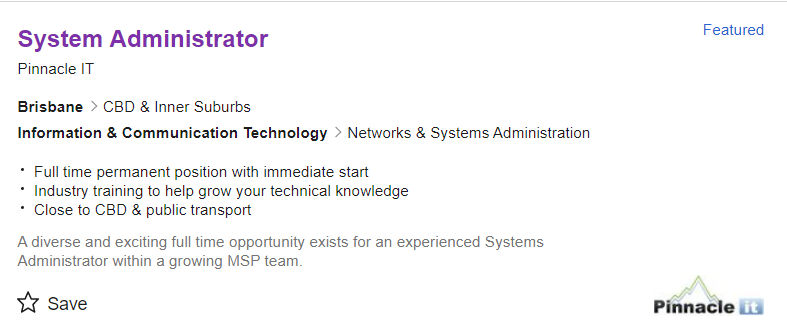

Personal information
Name: Anthony Tsui
Student number: S3791898@student.rmit.edu.au
Background information
I am 20 years old this year and I live in Footscray, Victoria with a Chinese background and can speak 2 languages, English and Cantonese. I am now enrolled in my first semester of Bachelor of Information Technology which commenced in mid-July 2020, to expand my knowledge in the I.T field and graduate with a bachelor’s degree. What I enjoy doing most during my free time, is to socialise with my friends while playing video games together which include League of Legends, Valorant, Borderlands 3, and Sea of Thieves.
Interest in IT
My area of interest in I.T is more on the hardware, this started when I got to build my first gaming computer which was right after graduating from high school when I started researching individual computer components to find the best hardware I could get for my budget, this whole researching process got me intrigued with high-end hardware. Also, as for my IT experience, I have a very basic understanding of it like IT works with servers, hardware, and operating systems.
I chose to study at RMIT because the university has outstanding facilities and industry connections which can improve my overall learning experience and help me step foot into the industry. The university is also very close to home which makes my commute time a lot shorter, it also has a good reputation even on a global scale.
Throughout my course, I expect to learn all the necessary skills to become a System Administrator such as run, configure, and troubleshoot problems whether it be hardware or software related issues that occur.
Ideal Job
For me I would really want to work in a job that is chill and does not have a dress code and instead were able to wear whatever we want. However, system administrator would also be a nice job.
The system administrators’ position is responsible for installing, upgrading, and monitoring all the software and hardware. They are also required to diagnose and resolve all IT related problems that occur swiftly.
This potion first caught my attention because it is closely related to some of my interests such as handling hardware components and exploring computer software, this is the same for a system administrator where they are responsible for all hardware and software linked issues.
For the position of a system administrator the skills, qualifications, and experience are quite demanding. It requires you to be skilful in handling different types of server operating environments, along with managing complex customer environments.
The qualifications needed for this place include Microsoft certifications, Cisco certifications, VMware, and in terms of the experience they must have 10 or more years of experience in the industry.
You also need to be experienced in areas such as:
In terms of my skills, qualifications, and experience, now for the experience I only have a simple understanding of networking, using Cisco, and information about general systems administration like Active Directory, DNS, and DHCP. As for skills and qualifications, I have neither of them.
To meet skills, qualifications, and experience I plan on applying for an internship placement at a decent company with a good reputation if possible, to help me set my foundation in the industry, then enrol in short courses soon to expand my knowledge and obtain some necessary qualifications.
Personal Profile
These are my results from the three tests I completed which involve:
What do the results of these tests mean for you?
To me, these test results are an indication of the type of person I truly am, and it helped me confirm a few queries about myself before the test. It helped me confirm that I am not a creative person at all, to say the least, and that I am extremely introverted.
How do you think these results may influence your behaviour in a team?
I think these results will make me less interactive during a team discussion that revolves around creativity because I am not a creative person. Although the results show that I am an introvert, that is however, this is different to a certain extent when I am assigned to a team and is required of me to communicate and work together with team members.
How should you take this into account when forming a team?
When forming a team, I should try to look for people who excel in areas that I am not so great in so that it can balance the team. For example, I need people who have a creative mind, people who can come up with creative ideas, and someone with good communication skills and can inspire others to take the role of leadership in the team.
Project Ideas
Overview
My project plan is to develop a free smartphone app that can allow its users to view their monthly spending to review and see what their money is being spent on each month, It provides graphs and categorised data of the user’s monthly expenses. The app will be available on both the App Store and the Play Store. It requires the user to sign up an account with an email, to use this app, they have the option to choose between the free version which provides the basic features such as viewing their monthly expenses and monitors spending. The premium version which costs $10 a month or $110 annually, provides features such as estimating your monthly spending and calculating how much money you will have left by the end of each month based on your average spending habits.
Motivation
My leading motivation for this project is to help people manage their spending and prevent them from spending money online irrationally because online shopping over the years has become increasingly popular. “As of February 2019, 80.8% of the population in Australia are shopping online.” Therefore, I feel like there is a chance for my smartphone app to do well while online shopping is a huge business opportunity. This smartphone app can be useful to people who do not have much self-control when shopping online and want to fix their bad spending habits, grants them the necessary tools and assistance to help fix that problem.
Description
There will be two variations of the app that you can choose from, the free version which include the basic features and the premium version which include additional features only premium members have access to.
The free version of the app grants you access to several features which include tracking monthly or daily expenses, allows the user to set a monthly spending limit on any card, it automatically prevents your card from being deducted any further once it has reached the spending limit for that month. Alerts will be sent to your phone to inform you that you are close to your monthly limit, you can check to see how many days there are left till the budget resets. It automatically arranges your transactions into different categories such as, bills, hobbies, food and drink, and others that do not fit in the main categories. It can also prepare a detailed report for your spending ranging from weekly, monthly and yearly and can let you know of upcoming payments.
The premium version comes with all the features listed above in the free version with more features that are exclusive to premium users like being able to connect to banks in other countries, tells you each month where your spending has increased or decreased and areas of spending that you can cut down and instead allocate towards your saving goals. It has estimates of next month’s spending after a couple of months of analysing the users spending pattern. There is also a feature which allows the user to set a monthly spending limit on whichever card he wants, the feature automatically prevents your card from being debited any further once it has reached the spending limit for that month. For the premium subscription you can choose between 2 payment options, either pay $10 each month or $110 annually.
To ensure the safety of the users’ bank details security measures will be put in place. There will be two things that the user will need to set up, a 4-digit passcode and a fingerprint login, a function that should be exclusive to the user himself. If another device that the account does not recognise tries to gain access the account it will automatically send a message to the user and email them, to alert them that the security system has detected an unknown device that is trying to access the account.
It gives you the option to syncs your bank account to the app. The banks that it can sync with include Westpac Bank, Commonwealth Bank, ANZ Bank and many more financial institutions within Australia.
Tools and Technologies
To make the app I will need to use programming languages such as PHP and C++ to help write the programming codes to run my app, as for the cross-platform framework I have chosen to use Xamarin as it is considered one of the best for this cross-platform task. I will also need the team members to have hardware like a computer with around 16GB of ram, an SSD with 256GB and a Core i3 Process at the very least.
Skills Required
For my smartphone app project, I will need to assemble a team which consists of many people with varying skills such as app developer to help me create a program to run my app and ensure that all the features are working. I also need to find a graphic designer to help me draw a design on how the app is going to look.
It will be relatively easy to acquire people with the relevant skills as nowadays there are a lot of different types of app developers and graphic designers that you can find on websites where they sell their expertise for a price at an hourly rate.
Outcome
If my project becomes successful and develops a large user base, it will help solve money management issues that many people have, spending on unnecessary goods such as luxury brand items when they don’t have the extra money to splurge on these non-essential items. People will not have to worry about not being able to pay the bills, purchasing necessities or even going into debt because of spending problems. It will keep peoples spending in control and will likely prevent impulsive spending and help focus on achieving their financial goals faster. It will also help me further develop my smartphone app and possible add more features to it and make improvements where necessary.
References
https://www.16personalities.com/
http://www.testmycreativity.com/
http://www.educationplanner.org/students/self-assessments/learning-styles-quiz.shtml
https://medium.com/hackernoon/top-10-best-mobile-app-development-frameworks-in-2019-612b95cf930f
https://topofstacksoftware.com/2019/01/10-best-programming-languages-for-mobile-app-development/